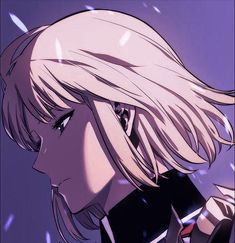
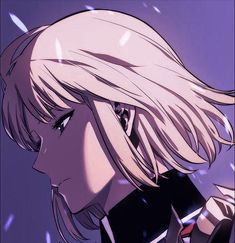
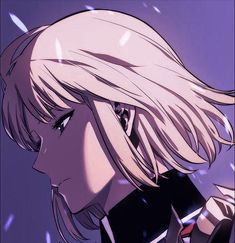

Solo Leveling adalah sebuah manhwa Korea yang mengisahkan dunia di mana "gate" atau portal dimensi membuka jalur antara manusia dan monster. Dalam dunia ini, beberapa manusia mendapatkan kemampuan untuk menjadi "hunter" - pahlawan yang bertempur melawan monster di dungeon berbahaya.
Sang protagonis, Sung Jin-Woo, bermula sebagai hunter terlemah dengan peringkat E. Nasibnya berubah setelah selamat dari dungeon mematikan yang memberikannya sistem rahasia unik. Sistem ini memungkinkannya "level up" seperti dalam video game, menciptakan tentara bayangan, dan meningkatkan kekuatannya secara dramatis.
Perjalanan Jin-Woo dari hunter terlemah menjadi yang terkuat menjadi inti cerita, dengan pertarungan epik, pengembangan karakter, dan misteri di balik munculnya monster. Solo Leveling mengeksplorasi tema pengembangan diri, ketekunan, dan perlindungan umat manusia dengan cara yang mendebarkan dan inovatif.
WikipediaSolo Leveling |
|
| Genre | Laga, Petualangan, Fantasi |
| Pengarang | Chugong |
| Asal | Korea Selatan |
| Ilustrator | Dubu (Redice Studio) |
| Terbit | 4 Maret 2018 – 29 Desember 2021 |
| Chapter | 179 |
| Status | Selesai/End |
Seperti yang kita tahu bahwa, Manhwa solo Leveling sangat populer pada waktu itu. kalian pasti penasaran bagaimana jalan ceritanya Sung Jin-woo dari rank E menjadi terkuat, dan kalian tidak tahu dimana tempat bacanya. nah, saya akan memberikan bebera halaman web atau aplikasi yang bisa kalian gunakan untuk membaca manhwa Solo Leveling yang ada di bawah ini :
KomikFox adalah situs dan aplikasi yang menyediakan komik manga, manhua, dan tentunya manhwa Solo Leveling dengan subtitle indonesia. Situs ini tentunya gratis dan memiliki tanpilan user yang friendly. kalian bisa memasuki situs KomikFox di bawah ini
Website : KomikFox.id
Aplikasi : KomikFox
Komikcast adalah platform baca komik online yang menyediakan berbagai buku komik manga, manhua, dan tentunya manhwa terbaru dalam bahasa Indonesia secara gratis. dan Komikcast ada manhwa Solo Leveling Komikcast dapat diakses melalui website atau aplikasi yang tertera di bawah ini
Website : Komikcast.bz
Aplikasi : Komikcast
Komiku adalah situs yang menyediakan bacaan manga, manhua, dan manhwa secara gratis dan tidak terlalu banyak menampilkan iklan. situs ini bersubtitle indonesia dan pastinya ada manhwa Solo Leveling. Komiku bisa di akses melalui aplikasi dan website tentunya yang ada dibawah ini
Website : Komiku.id
Aplikasi : Komiku

| Sung Jin-Woo |
| Hunter Rank S+ | Monarch of Shadows |

| Cha hae-in |
| Hunter Rank S | Sword Dance |
| Go Gun-hee |
| Hunter Rank S | Unidentified |
| Yo Jin-hoo |
| Hunter Rank D | Tanker |
| Baek Yoon-ho |
| Hunter Rank S | Fighter |